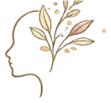
pri.vê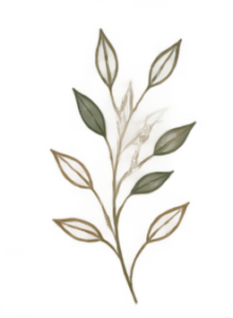
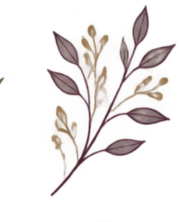
FORMAÇÃO CLÍNICA EM
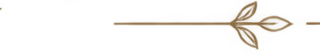
Uma formação conduzida a quatro mãos, unindo o rigor da teoria clássica ao aprofundamento das abordagens contextuais — para clínicos que querem ir além da técnica e trabalhar a partir da vivência.
A formação é conduzida em dupla regência por Priscila Tenenbaum Tyszler e Veruska Andrea dos Santos, psicólogas com décadas de atuação clínica, docência e supervisão em Terapia do Esquema no Brasil e no exterior.
Ao longo do curso, teoria, vivência e supervisão caminham juntas: cada módulo combina fundamentação técnica, prática clínica guiada e espaço para a experiência pessoal do participante.
"Formar terapeutas que sintam, antes de ensinar quem só sabe."
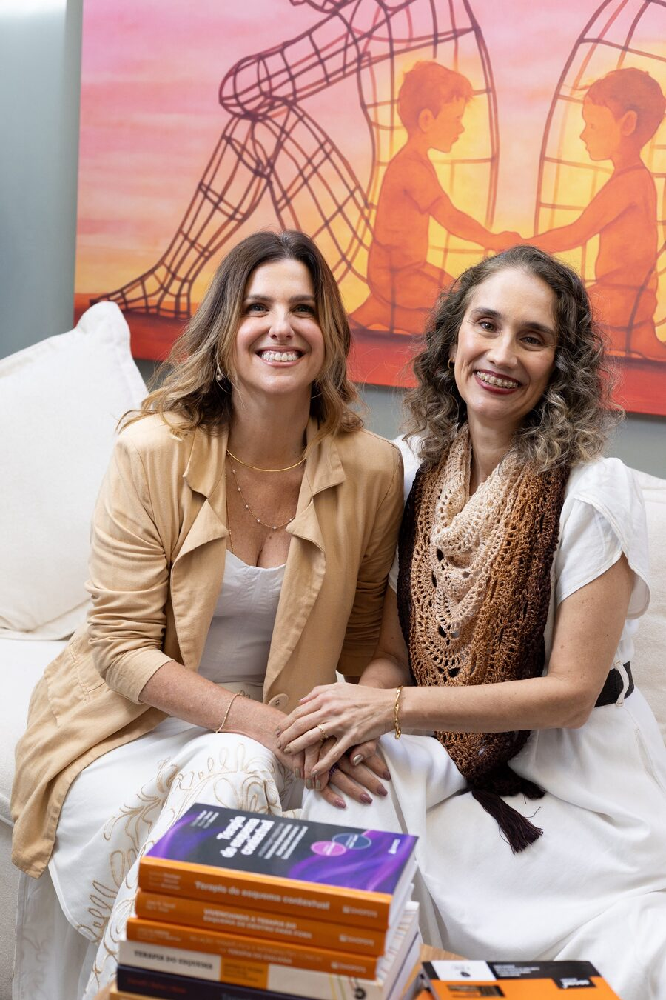
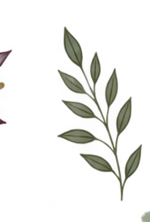
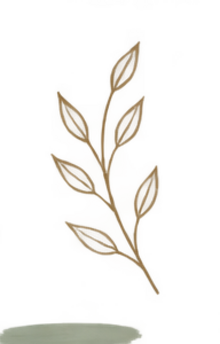
Uma formação estruturada em módulos presenciais, pensada para clínicos que já atendem e querem aprofundar a prática em Terapia do Esquema.
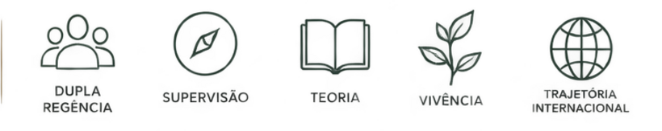
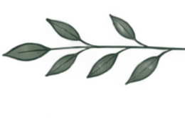
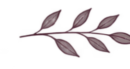
O percurso avança módulo a módulo, do fundamento teórico à prática vivencial dos modos esquemáticos.
Fundamentos do temperamento e personalidade (Big Five, modelo psicobiológico de Cloninger, Thomas & Chess), neurobiologia dos esquemas e teoria do apego.
Os cinco domínios e os 18 esquemas, estilos de enfrentamento, avaliação clínica e conceituação de caso.
As quatro famílias de modos, o mapa dimensional e dinâmico, e a virada contextual na leitura dos modos.
Novos módulos serão anunciados em breve. Datas confirmadas serão comunicadas às turmas com antecedência.
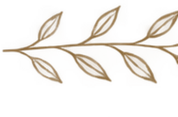
Duas trajetórias que se encontram na clínica com crianças, adolescentes e adultos, e na formação de novos terapeutas.
Psicóloga · Mestra em Psicologia Social
Psicóloga pela UFRJ, com mestrado em Psicologia Social pela UERJ e especializações em Saúde Mental e Desenvolvimento Infanto-Juvenil (CESANTA) e em Psicologia Positiva (UCAM). Formação em Terapia do Esquema pela Wainer/ISST, com certificação internacional em TE com Crianças e Adolescentes (Christof Loose, Düsseldorf) e em Terapias Contextuais Comportamentais (CEFI, Porto Alegre). Certificada internacionalmente em Terapia Focada nas Emoções pelo TFE Brasil. Professora supervisora clínica da pós-graduação em TCC da PUC-Rio e docente do Child Behavior Institute (CBI) of Miami.
Psicóloga · Mestra e Doutora em Saúde Mental
Psicóloga pela UFRJ, com mestrado e doutorado em Saúde Mental pelo IPUB-UFRJ e especialização em TCC pela UCAM. Formação em Terapia do Esquema pela Wainer/ISST, com certificação internacional em TE com Crianças e Adolescentes (Christof Loose, Düsseldorf) e em Terapias Contextuais Comportamentais (CEFI, Porto Alegre). Certificada internacionalmente em Terapia Focada nas Emoções pelo TFE Brasil. Professora e supervisora clínica da pós-graduação em TCC da PUC-Rio e coordenadora da pós-graduação em TCC para Infância e Adolescência do CBI of Miami.
Ambiente exclusivo para quem já está matriculado na formação — materiais, gravações e comunicados de cada módulo.
Ainda não tem acesso? Fale com a secretaria da formação pri.vê para receber seu login.
Uma formação clínica vivencial — para terapeutas que querem compreender o esquema de dentro para fora.